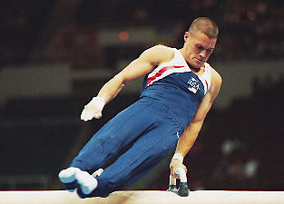

Blaine Wilson (USA)
5-Time American Cup AA Champion

Medal Total
Olympic Games: 1
Silver
World Championships: 1 Silver
Competition Results
1988
JO Nationals (Class II): 23rd AA
1993
US Championships: 40th AA
1994
NCAA Championships: 3rd Team, 11th AA, 2nd R
US Championships: 9th AA, 2nd R, 5th HB
USA-ROM Dual Meet: 3rd AA
Winter Cup: 5th AA
1995
Atlanta Gymnastics Invitational: 2nd AA
NCAA Championships: 2nd R
US Championships: 3rd AA, 2nd FX, 3rd PB, 4th R
World Championships: 9th Team, 25th AA
1996
American Cup: 4th AA (prelims)
NCAA Championships: 1st Team, 1st AA, 1st R, 1st PB
Olympic Games: 5th Team, 10th AA, 7th R
US Championships: 1st AA, 1st V, 2nd PH, 3rd PB
US Olympic Trials: 2nd AA
1997
American Cup: 1st AA
NCAA Championships: 1st AA, 1st R, 1st V, 2nd PB, 4th PH
US Championsihps: 1st AA
World Championships: 5th Team, 10th AA
1998
3-on-3 International: 4th Team
American Cup: 1st AA
Goodwill Games: 3rd AA, 4th R
Intl. Team Championships: 1st Team, 1st AA
Winter Cup: 1st AA
1999
3-on-3 International: 2nd Team
American Cup: 1st AA
Intl. Team Championships: 1st Team, 8th AA
US Championships: 1st AA, 1st R
Winter Cup: 1st AA
World Championships: 6th Team, 4th AA
2000
Olympic Games: 5th Team, 6th AA, 6th V
Pacific Alliance Championships: 1st AA, 2nd PB, 8th HB
US Championships: 1st AA
US Olympic Trials: 1st AA
2001
American Cup: 1st AA
French International: 4th R, 5th PB, 6th PH
Winter Cup: 1st AA, 1st PB
2002
Li Ning Cup: 3rd R
US Championships: 2nd AA, 1st R, 1st HB, 2nd PB
2003
American Cup: 1st AA
US Championships: 3rd AA
World Championships: 2nd Team, 6th R, 6th PB
2004
American Cup: 8th AA
Olympic Games: 2nd Team
Winter Cup: 1st AA
This page was created on September
17, 2005.
© Gymn Forum